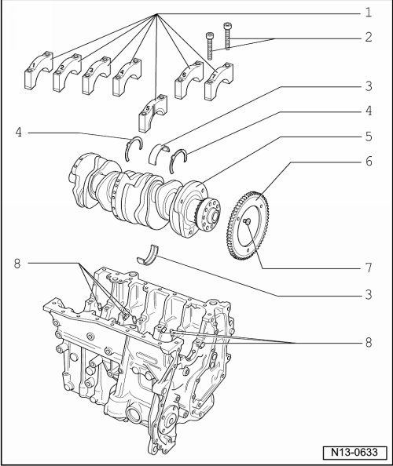
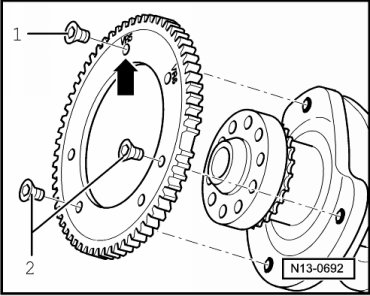

Crankshaft, Assembly Overview
Crankshaft, Assembly Overview
Install sensor wheel on crankshaft --> [ Sensor Wheel on Crankshaft, Installing ]
• Before removing crankshaft, prepare for appropriate storage, so that sensor wheel --> [ (Item 6) Sensor wheel ] does not make contact or become damaged.
• Engine is to be secured to engine and transmission holder (VAS 6095) for performing assembly work.
• When changing bearing shells ensure that bearing shells with the same color code are used.

1 Bearing cap
• Bearing cap 1: Vibration damper side
• Bearing cap 5 with notches for thrust washers
• Retaining tabs of bearing shells and cylinder block/bearing caps must lie above one another
2 30 Nm + 1/2 turn (180°)
• Replace
• 2 x 90 degree further turns are permitted
3 Bearing shell 1 to 7
• For bearing cap without oil groove
• For cylinder block with oil groove
• Do not interchange used bearing shells (mark)
4 Thrust washer
• For bearing cap 5
• Observe locating point
5 Crankshaft
• Before removing, observe note --> [ Crankshaft, Assembly Overview ] Crankshaft, Assembly Overview.
• Axial play new: 0.07 to 0.23 mm, Wear limit: 0.30 mm
• Check radial clearance with Plastigage 0.02 to 00.06 mm, Wear limit: 0.10 mm
• Do not turn crankshaft when measuring radial play
• Crankshaft dimensions: Main bearing: 59.958 to 59.978 mm, Connecting rod bearing: 53.958 to 53.978 mm reworking is not permitted
6 Sensor wheel
• For engine speed (RPM) sensor (G28)
• Replace
• Installing --> [ Sensor Wheel on Crankshaft, Installing ]
7 10 Nm + 1/4 turn (90°)
• Replace
8 Oil spray jet
• For crankshaft bearing 2 to 7
• For piston cooling
• Opening pressure 2.0 bar pressure
• Removing and installing --> [ Oil Spray Nozzle ] Service and Repair.
• See note --> [ Secure engine to when working on engine. ] Engine Installing.
Sensor Wheel on Crankshaft, Installing

Special tools, testers and auxiliary items required
• Torque wrench (5 to 50 Nm) (V.A.G 1331)
• Locking fluid (D 000 600 A2)
Procedure
Make sure crankshaft/sensor wheel contact surfaces are free of oil and grease.
- Apply a thin coat of locking compound (D 000 600 A2) to contact surfaces of crankshaft and sensor wheel for additional security.
- Check that when installing "VR6" - arrow - is marked at individual threaded holes.
- Tighten all new bolts by hand.
- Tighten securing bolt - 1 - to 10 Nm + 1/ 4 turn (90°).
- Tighten securing bolts - 2 - to 10 Nm + 1/ 4 turn (90°).